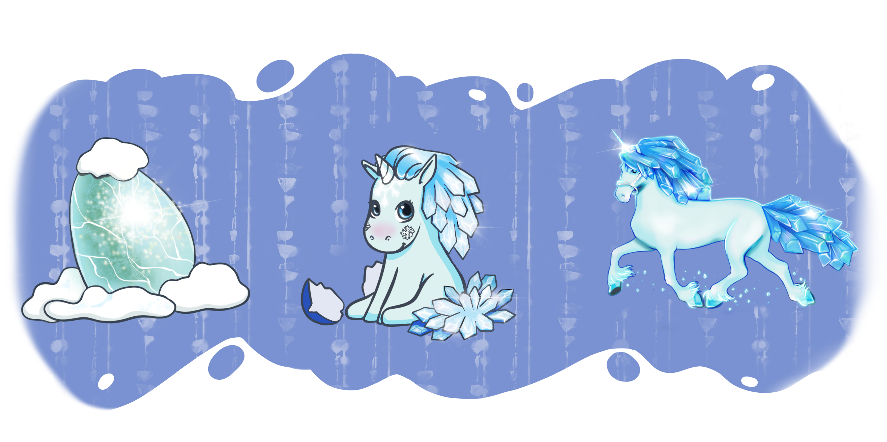

Дивное Залесье(оно же - Дивнолесье) приоткрывает свои двери для истинных книголюбов, книгочеев и книгоманов! Это ты?! Данная игра была создана кураторами сообщества Книжная полка.
Начало игры
Чтобы начать играть - подай заявку в группу Книжная полка. Куратор Дивнолесья определит соту, с которой ты начнешь свое путешествие.
Присоединиться к нам можно в абсолютно любой момент.
Как играть
В ходе игры каждый игрок перемещается по сотам, читает книгу, соответствующую заданию соты и пишет отзыв на книгу.
Оказавшить на соте, посмотри ее описание. Сота может содержать темы для прочтения или событие. Подробнее о типах сот и заданиях смотри в разделе "О карте".
Если это обычная сота, то в ней указаны 3 темы на выбор. Без питомцев можно взять только первую тему. Выбрав тему, вы выбираете любую книгу соответствуюшую теме самостоятельно. Прочитав книгу - вы пишете отзыв в группу. Правила оформления отзыва см. здесь(Правила оформления отчета). И да, книги можно перечитывать (при условии, что ранее вы не оставляли на нее отзыв).
После написания отзыва, вы выбираете сами следующую соту, куда переместиться. ледующая сота может быть только прилежащей к текущей соте (одна из граней сот соприкосаются). Соты можно посещать множество раз, но это влияет на получаемый опыт(см. подробнее в разделе "Игровой опыт"). Можно остатьсся на текущей соте и никуда не дввигаться.
В конце сезона можно оформить пост с личными книжными итогами. И если вы выполнили задание сезона, то можно поучаствовать в розыгрыше призовой коробки. Подробнее читай в разделе Призы и награды.
О карте
Карта разделена на 5 регонов: Снежный перевал, Мавкино болото, Междумирье, Каменное плато (город) и Пустыня.

Карта состоит из сот. Соты бывают нескольких видов:
- Обычные. Каждая такая сота содержит темы для чтения, которые можно увидеть заранее.
- Событие. Любая сота с изображением.
- Квест. В каждом регоне карты по одному месту с квестами (отмечены на карта словом "Квесты"). Всего 4:
- ❄ снежный перевал,
- 🐊 мавкины угодья (болото),
- 🏤 каменное плато,
- 🔥 пустыня.
В группе в обсуждении находятся все квесты. Как постоянные, так и временные. Постоянные квесты – во всех местностях одинаковые. Временные квесты - квест к какому-то празднику или событию. Они будут с четко оговоренными сроками. Награда за квест озвучена заранее. Чтение книг по квесту засчитывается одной пройденной сотой, ежели в правилах не сказано обратное.
- Казино. Есть в каждом регоне карты. Задания каждого казино разные. Подробнее можно узнать в описании соответствующей соты: D5, F28, G28, K11, L11, M27, N27.
- Таверна. Уникальное место в центре карты. Заходи Таверну и выбирай квесты I15
Цель игры
Цель в первую очередь получить удовольствие от чтения. Открывай новых авторов. Новые жанры. Новые книги в любимых жанрах и любимых авторов. Делись эмоциями от прочитанного с такими же книголюбами как и ты. Заводи новых друзей. Соревнуйся.
Можно просто бесцельно ходить по карте и посещать соты с интересными темами.
Можно найти и вырастить всех единорогов Залесья.
Можно задаться целью выиграть сезонную награду.
Можно задаться целью стать самым популярным обозревателем книг в группе.
Наше приключение бесконечное, каждый новый сезон наша команда постарается баловать вас нововведениями.
Призы и награды
Каждый сезон в Дивном Залесье разыгрывается призовая коробка с книгами и сладостями. Победитель выбирается случайно из участвников розыгрыша. Чтобы участвовать в розыгрыше:
! Участвовать в розыгрыше может лишь имея адрес в РФ.
Правила оформления отчета
Отчет это полноценный, развернутый отзыв о прочитанной книге БЕЗ аннотации. Аннотация может быть прикрепленна в изображениях к отзыву. Каждый отчет проверяется Куратором Залесья (не более 3х суток с момента отправки отзыва). Куратор вправе не принять отчет(с указанием причины) или потребовать более детального письменного осмысления.
- Тэги. В конце отзыва ставим тэг #ДивноеЗалесье (А/К), где буква в скобках обозначает куратора (Аня - А, Ксюша - К).
- Присказка. Это короткое описание, которое прислал вам Куратор, когда вы ступили на соту.
- Текущая сота. Пример: C5(1). В скобках указывается номер темы.
- Следующий ход. В отчете должна быть указана следующая сота, куда делаетсся ход. Если участник хочет воспользоваться второй, а не первой темой, то в посте он прописывает свое желание. Например, С5(2). Указание соты без номера темы автоматически приравнивается к тому, что участник читает первую из предложенных тем.
- Объем произведения. Указывается объем прочитанной бумажной книги. Если книга была прочитал в электронной версии, то ____
Читать следующий ход (не на клетке СОБЫТИЕ/КАЗИНО/ГОНЕЦ) можно без принятия отчета за предыдущий ход. А вот отправку следующего отчета можно лишь после принятия куратором отчета предыдущего.
Игровой опыт
Опыт можно заработать:
- выполнив квест с «Доски квестов» (при этом каждый квест является уникальным для получения коробки раз в сезон, т.е. находясь на одной квестовой соте, но выполнив 6 разных квестов – можно получить номер для розыгрыша сезонной коробули подарков. Однако! Выполнение 6 разных квестов на одной соте не является основанием выдачи единорожьего яйца одной из залесных территорий: для этого нужно переходить на разные квестовые соты, их должно быть 6);
- по особому многоходовому квесту с поля Залесья;
- прочитав книгу больше 400 стр (бумажного варианта). Вы можете брать книги и меньшего объема, эти соты будут засчитаны, но не будет начислен опыт! 400 стр - 1 единица опыта (800 стр- 2 ед и т.д.). Если отзыв идет на серию книг, каждая часть из которой подходит к теме, участник указывает объем каждой книги и куратор вправе причислить опыт по самой большей части цикла (если отзыв прочитан на дилогию, где 1 часть – 300 стр, а 2 часть – 800, то куратор засчитывает опыт по второй книге). Если участник написал отзыв на серию книг без указания страниц, то куратор берет в расчет первую книгу серии.
Казино считается в розыгрыше сезонной коробки призов как один ход. Уникальный опыт дается за квест по прикорму и за квест по таверне.
Валюта Дивнолесья: Юникоины
За каждую книгу от 100 страниц вам начисляются «монетки», где, например, отзыв на прочитанную книгу из 377 страниц обогатит своего хозяина на 3 монеты. Залессную валюту можно потратить на специальных местах, отмеченных на карте красной полосой, прикупив там телепорт, волшебную конфету и другие полезные сокровища. Больше информации – в теме #гонец_вещает.
Питомцы
В Дивном Залесье обитает много животных, но самый ценный - это единорог. Его то и предлагается приручить во время путешествия по Залесью.  Единороги бывают:
- Снежный,
- Пустынный,
- Каменный,
- Лесной,
- Болотный.
Единорога невозможно поймать, его можно только взрастить из яйца. Пройдя 6 уникальных сот вы получите одно из 5 типов яйца-питомца. Питомца можно получить из яйца и вырастить за игровой опыт (читай как получить опыт подронее в разделе Игровой Опыт).
Для вылупления питомца из яйца вам необходимо собрать 15 ед. опыта.
Взрастить взрослого единорога из вылупившегося единорожки можно собрав 15 ед. опыта и оплатить пошлину за транспортировку по Залесью парнокопытного животного в размере 50 юникоинов (про юникоины читай в разделе Валюта Дивнолесья: Юникоины).
Яйцо с питомцем не дает его хозяину никаких дополнительных плюшек в игре.
Маленький единорожек дает возможность брать вторую тему в сотах.
Взрослый единорог дает возможность выбрать любую тему из трех предложенных в сотах.
Кроме снежного, пустынного, лесного каменного и болотного единорогов, можно найти особого Королевского единорога.

Получение королевского яйца происходит ТОЛЬКО на совместном квесте «Сокровищница Дивнолесья», а взращивание его происходит иным способом: необходимо пожертвовать пять разных яиц-питомцев (из каждой территории Дивнолесья по одному яйцу).
Взрослый Королевский единорог дарует своему хозяину особые плюшки, озвученные в начале сезона.
Подробнее про Королевского единорога можно узнать в группе.